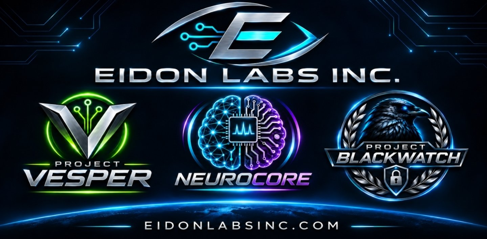

Gianluca Mazza, who built and maintains xllama, the open source project our Xbox Series X work runs on, wrote about our runs this week. He called them some of the most useful contributions the project has received, and he pointed to our App versus Game findings as the kind of field work an open project hopes for. Coming from the person who wrote the software, that means a great deal to a small lab in Charleston, Illinois.

It did not stop at kind words. Gianluca has written to us proposing a collaboration, and we answered this morning proposing a call next week, on Wednesday, December 2, to talk about what we are learning on Series X and where working together might go. Nothing is agreed yet, and we will say more if and when there is something agreed to say.
Vesper herself is on the road to the Microsoft Store. Our company developer verification is in progress with Microsoft, and she is in testing on an Xbox Series X here at the lab. The work between here and the Store is a written checklist with a date on it, January 6, and items close on it every day.
Her rule has not changed. Her game knowledge is verified against the games themselves, from sources we are allowed to use, and where she does not have a verified answer she says so instead of guessing. A companion who invents a quest step is worse than one who stays quiet. We would rather she refuse than mislead a player.
It has not all been smooth, and we say that plainly. Teaching her to answer willingly, and not only carefully, is slow work, and long conversations have taught us hard lessons about memory that grows without bound. We keep posting what we learn, the breaks included, in the xllama discussions where this started, because the fixes only count when they are proven in the open.
The outlook from here is good, and it is earned rather than assumed. Thank you to Gianluca, and to everyone who has read along, tested, and told us the truth about what breaks. More soon.